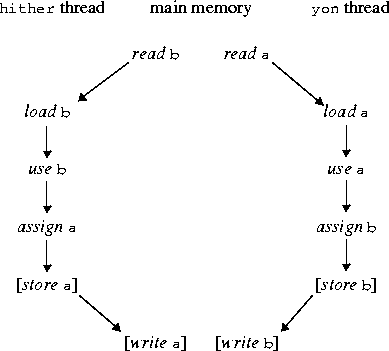
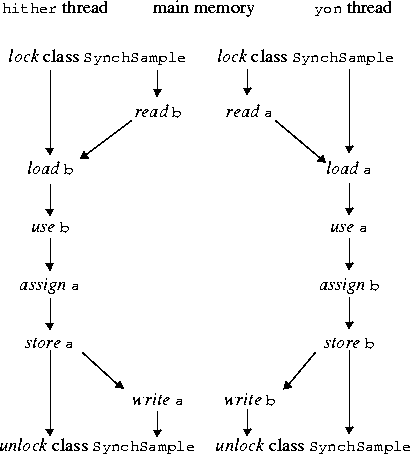
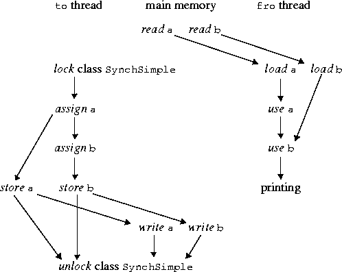

CHAPTER 8
Threads and Locks
This chapter details the low-level actions that may be used to explain the interaction
of Java virtual machine threads with a shared main memory. It has been adapted
with minimal changes from Chapter 17 of the first edition of The JavaTM
Language
Specification, by James Gosling, Bill Joy, and Guy Steele.
8.1 Terminology and Framework
A variable is any location within a program that may be stored into. This includes
not only class variables and instance variables, but also components of arrays. Variables
are kept in a main memory that is shared by all threads. Because it is impossible
for one thread to access parameters or local variables of another thread, it does
not matter whether parameters and local variables are thought of as residing in the
shared main memory or in the working memory of the thread that owns them.
Every thread has a working memory in which it keeps its own working copy of variables that it must use or assign. As the thread executes a program, it operates on these working copies. The main memory contains the master copy of every variable. There are rules about when a thread is permitted or required to transfer the contents of its working copy of a variable into the master copy or vice versa.
The main memory also contains locks; there is one lock associated with each object. Threads may compete to acquire a lock.
For the purposes of this chapter, the verbs use, assign, load, store, lock, and unlock name actions that a thread can perform. The verbs read, write, lock, and unlock name actions that the main memory subsystem can perform. Each of these operations is atomic (indivisible).
A use or assign operation is a tightly coupled interaction between a thread's execution engine and the thread's working memory. A lock or unlock operation is a tightly coupled interaction between a thread's execution engine and the main memory. But the transfer of data between the main memory and a thread's working memory is loosely coupled. When data is copied from the main memory to a working memory, two actions must occur: a read operation performed by the main memory, followed some time later by a corresponding load operation performed by the working memory. When data is copied from a working memory to the main memory, two actions must occur: a store operation performed by the working memory, followed some time later by a corresponding write operation performed by the main memory. There may be some transit time between main memory and a working memory, and the transit time may be different for each transaction; thus, operations initiated by a thread on different variables may be viewed by another thread as occurring in a different order. For each variable, however, the operations in main memory on behalf of any one thread are performed in the same order as the corresponding operations by that thread. (This is explained in greater detail later.)
A single thread issues a stream of use, assign, lock, and unlock operations as dictated by the semantics of the program it is executing. The underlying Java virtual machine implementation is then required additionally to perform appropriate load, store, read, and write operations so as to obey a certain set of constraints, explained later. If the implementation correctly follows these rules and the programmer follows certain other rules of programming, then data can be reliably transferred between threads through shared variables. The rules are designed to be "tight" enough to make this possible, but "loose" enough to allow hardware and software designers considerable freedom to improve speed and throughput through such mechanisms as registers, queues, and caches.
Here are the detailed definitions of each of the operations:
- A use action (by a thread) transfers the contents of the thread's working copy of a variable to the thread's execution engine. This action is performed whenever a thread executes a virtual machine instruction that uses the value of a variable.
- An assign action (by a thread) transfers a value from the thread's execution engine into the thread's working copy of a variable. This action is performed whenever a thread executes a virtual machine instruction that assigns to a variable.
- A read action (by the main memory) transmits the contents of the master copy of a variable to a thread's working memory for use by a later load operation.
- A load action (by a thread) puts a value transmitted from main memory by a read action into the thread's working copy of a variable.
- A store action (by a thread) transmits the contents of the thread's working copy of a variable to main memory for use by a later write operation.
- A write action (by the main memory) puts a value transmitted from the thread's working memory by a store action into the master copy of a variable in main memory.
- A lock action (by a thread tightly synchronized with main memory) causes a thread to acquire one claim on a particular lock.
- An unlock action (by a thread tightly synchronized with main memory) causes a thread to release one claim on a particular lock.
Thus, the interaction of a thread with a variable over time consists of a sequence of use, assign, load, and store operations. Main memory performs a read operation for every load and a write operation for every store. A thread's interactions with a lock over time consist of a sequence of lock and unlock operations. All the globally visible behavior of a thread thus comprises all the thread's operations on variables and locks.
8.2 Execution Order and Consistency
The rules of execution order constrain the order in which certain events may occur.
There are four general constraints on the relationships among actions:
- The actions performed by any one thread are totally ordered; that is, for any two actions performed by a thread, one action precedes the other.
- The actions performed by the main memory for any one variable are totally ordered; that is, for any two actions performed by the main memory on the same variable, one action precedes the other.
- The actions performed by the main memory for any one lock are totally ordered; that is, for any two actions performed by the main memory on the same lock, one action precedes the other.
- It is not permitted for an action to follow itself.
The last rule may seem trivial, but it does need to be stated separately and explicitly
for completeness. Without the rule, it would be possible to propose a set of actions
by two or more threads and precedence relationships among the actions that would
satisfy all the other rules but would require an action to follow itself.
Threads do not interact directly; they communicate only through the shared main memory. The relationships between the actions of a thread and the actions of main memory are constrained in three ways:
- Each lock or unlock action is performed jointly by some thread and the main memory.
- Each load action by a thread is uniquely paired with a read action by the main memory such that the load action follows the read action.
- Each store action by a thread is uniquely paired with a write action by the main memory such that the write action follows the store action.
Most of the rules in the following sections further constrain the order in which certain actions take place. A rule may state that one action must precede or follow some other action. Note that this relationship is transitive: if action A must precede action B, and B must precede C, then A must precede C. The programmer must remember that these rules are the only constraints on the ordering of actions; if no rule or combination of rules implies that action A must precede action B, then a Java virtual machine implementation is free to perform action B before action A, or to perform action B concurrently with action A. This freedom can be the key to good performance. Conversely, an implementation is not required to take advantage of all the freedoms given it.
In the rules that follow, the phrasing "B must intervene between A and C" means that action B must follow action A and precede action C.
8.3 Rules About Variables
Let T be a thread and V be a variable. There are certain constraints on the operations
performed by T with respect to V :
- A use or assign by T of V is permitted only when dictated by execution by T of the program according to the standard execution model. For example, an occurrence of V as an operand of the
+ operator requires that a single use operation occur on V ; an occurrence of V as the left-hand operand of the assignment operator = requires that a single assign operation occur. All use and assign actions by a given thread must occur in the order specified by the program being executed by the thread. If the following rules forbid T to perform a required use as its next action, it may be necessary for T to perform a load first in order to make progress.
- A store operation by T on V must intervene between an assign by T of V and a subsequent load by T of V. (Less formally: a thread is not permitted to lose the most recent assign.)
- An assign operation by T on V must intervene between a load or store by T of V and a subsequent store by T of V. (Less formally: a thread is not permitted to write data from its working memory back to main memory for no reason.)
- After a thread is created, it must perform an assign or load operation on a variable before performing a use or store operation on that variable. (Less formally: a new thread starts with an empty working memory.)
- After a variable is created, every thread must perform an assign or load operation on that variable before performing a use or store operation on that variable. (Less formally: a new variable is created only in main memory and is not initially in any thread's working memory.)
Provided that all the constraints in Sections 8.3, 8.6, and 8.7 are obeyed, a load or store operation may be issued at any time by any thread on any variable, at the whim of the implementation.
There are also certain constraints on the read and write operations performed by main memory:
- For every load operation performed by any thread T on its working copy of a variable V, there must be a corresponding preceding read operation by the main memory on the master copy of V, and the load operation must put into the working copy the data transmitted by the corresponding read operation.
- For every store operation performed by any thread T on its working copy of a variable V, there must follow a corresponding write operation by the main memory on the master copy of V, and the write operation must put into the master copy the data transmitted by the corresponding store operation.
- Let action A be a load or store by thread T on variable V, and let action P be the corresponding read or write by the main memory on variable V. Similarly, let action B be some other load or store by thread T on that same variable V, and let action Q be the corresponding read or write by the main memory on variable V. If A precedes B, then P must precede Q. (Less formally: operations on the master copy of any given variable on behalf of a thread are performed by the main memory in exactly the order that the thread requested.)
Note that this last rule applies only to actions by a thread on the same variable. However,
there is a more stringent rule for volatile variables (§8.7).
8.4 Nonatomic Treatment of double and long Variables
If a double or long variable is not declared volatile, then for the purposes of
load, store, read, and write operations it is treated as if it were two variables of
32 bits each; wherever the rules require one of these operations, two such operations
are performed, one for each 32-bit half. The manner in which the 64 bits of
a double or long variable are encoded into two 32-bit quantities and the order
of the operations on the halves of the variables are not defined by The Java
Language Specification.
This matters only because a read or write of a double or long variable may be handled by an actual main memory as two 32-bit read or write operations that may be separated in time, with other operations coming between them. Consequently, if two threads concurrently assign distinct values to the same shared non-volatile double or long variable, a subsequent use of that variable may obtain a value that is not equal to either of the assigned values, but rather some implementation-dependent mixture of the two values.
An implementation is free to implement load, store, read, and write operations for double and long values as atomic 64-bit operations; in fact, this is strongly encouraged. The model divides them into 32-bit halves for the sake of currently popular microprocessors that fail to provide efficient atomic memory transactions on 64-bit quantities. It would have been simpler for the Java virtual machine to define all memory transactions on single variables as atomic; this more complex definition is a pragmatic concession to current hardware practice. In the future this concession may be eliminated. Meanwhile, programmers are cautioned to explicitly synchronize access to shared double and long variables.
8.5 Rules About Locks
Let T be a thread and L be a lock. There are certain constraints on the operations
performed by T with respect to L:
- A lock operation by T on L may occur only if, for every thread S other than T, the number of preceding unlock operations by S on L equals the number of preceding lock operations by S on L. (Less formally: only one thread at a time is permitted to lay claim to a lock; moreover, a thread may acquire the same lock multiple times and does not relinquish ownership of it until a matching number of unlock operations have been performed.)
- An unlock operation by thread T on lock L may occur only if the number of preceding unlock operations by T on L is strictly less than the number of preceding lock operations by T on L. (Less formally: a thread is not permitted to unlock a lock it does not own.)
With respect to a lock, the lock and unlock operations performed by all the threads
are performed in some total sequential order. This total order must be consistent
with the total order on the operations of each thread.
8.6 Rules About the Interaction of Locks and Variables
Let T be any thread, let V be any variable, and let L be any lock. There are certain
constraints on the operations performed by T with respect to V and L:
- Between an assign operation by T on V and a subsequent unlock operation by T on L, a store operation by T on V must intervene; moreover, the write operation corresponding to that store must precede the unlock operation, as seen by main memory. (Less formally: if a thread is to perform an unlock operation on any lock, it must first copy all assigned values in its working memory back out to main memory.)
- Between a lock operation by T on L and a subsequent use or store operation by T on a variable V, an assign or load operation on V must intervene; moreover, if it is a load operation, then the read operation corresponding to that load must follow the lock operation, as seen by main memory. (Less formally: a lock operation behaves as if it flushes all variables from the thread's working memory, after which the thread must either assign them itself or load copies anew from main memory.)
8.7 Rules for volatile Variables
If a variable is declared volatile, then additional constraints apply to the operations
of each thread. Let T be a thread and let V and W be volatile variables.
- A use operation by T on V is permitted only if the previous operation by T on V was load, and a load operation by T on V is permitted only if the next operation by T on V is use. The use operation is said to be "associated" with the read operation that corresponds to the load.
- A store operation by T on V is permitted only if the previous operation by T on V was assign, and an assign operation by T on V is permitted only if the next operation by T on V is store. The assign operation is said to be "associated" with the write operation that corresponds to the store.
- Let action A be a use or assign by thread T on variable V, let action F be the load or store associated with A, and let action P be the read or write of V that corresponds to F. Similarly, let action B be a use or assign by thread T on variable W, let action G be the load or store associated with B, and let action Q be the read or write of W that corresponds to G. If A precedes B, then P must precede Q. (Less formally: operations on the master copies of volatile variables on behalf of a thread are performed by the main memory in exactly the order that the thread requested.)
8.8 Prescient Store Operations
If a variable is not declared volatile, then the rules in the previous sections are
relaxed slightly to allow store operations to occur earlier than would otherwise be
permitted. The purpose of this relaxation is to allow optimizing compilers to perform
certain kinds of code rearrangement that preserve the semantics of properly
synchronized programs, but might be caught in the act of performing memory operations
out of order by programs that are not properly synchronized.
Suppose that a store by T of V would follow a particular assign by T of V according to the rules of the previous sections, with no intervening load or assign by T of V. Then that store operation would send to the main memory the value that the assign operation put into the working memory of thread T. The special rule allows the store operation actually to occur before the assign operation instead, if the following restrictions are obeyed:
- If the store operation occurs, the assign is bound to occur. (Remember, these are restrictions on what actually happens, not on what a thread plans to do. No fair performing a store and then throwing an exception before the assign occurs!)
- No lock operation intervenes between the relocated store and the assign.
- No load of V intervenes between the relocated store and the assign.
- No other store of V intervenes between the relocated store and the assign.
- The store operation sends to the main memory the value that the assign operation will put into the working memory of thread T.
This last property inspires us to call such an early store operation prescient: it has to
know ahead of time, somehow, what value will be stored by the assign that it should
have followed. In practice, optimized compiled code will compute such values early
(which is permitted if, for example, the computation has no side effects and throws
no exceptions), store them early (before entering a loop, for example), and keep
them in working registers for later use within the loop.
8.9 Discussion
Any association between locks and variables is purely conventional. Locking
any lock conceptually flushes all variables from a thread's working memory,
and unlocking any lock forces the writing out to main memory of all variables
that the thread has assigned. That a lock may be associated with a particular
object or a class is purely a convention. For example, in some applications it
may be appropriate always to lock an object before accessing any of its instance
variables; synchronized methods are a convenient way to follow this convention.
In other applications, it may suffice to use a single lock to synchronize
access to a large collection of objects.
If a thread uses a particular shared variable only after locking a particular lock and before the corresponding unlocking of that same lock, then the thread will read the shared value of that variable from main memory after the lock operation, if necessary, and will copy back to main memory the value most recently assigned to that variable before the unlock operation. This, in conjunction with the mutual exclusion rules for locks, suffices to guarantee that values are correctly transmitted from one thread to another through shared variables.
The rules for volatile variables effectively require that main memory be touched exactly once for each use or assign of a volatile variable by a thread, and that main memory be touched in exactly the order dictated by the thread execution semantics. However, such memory operations are not ordered with respect to read and write operations on nonvolatile variables.
8.10 Example: Possible Swap
Consider a class that has class variables a and b and methods hither and yon:
class Sample {
int a = 1, b = 2;
void hither() {
a = b;
}
void yon()
b = a;
}
}
Now suppose that two threads are created and that one thread calls hither while
the other thread calls yon. What is the required set of actions and what are the ordering
constraints?
Let us consider the thread that calls hither. According to the rules, this thread must perform a use of b followed by an assign of a. That is the bare minimum required to execute a call to the method hither.
Now, the first operation on variable b by the thread cannot be use. But it may be assign or load. An assign to b cannot occur because the program text does not call for such an assign operation, so a load of b is required. This load operation by the thread in turn requires a preceding read operation for b by the main memory.
The thread may optionally store the value of a after the assign has occurred. If it does, then the store operation in turn requires a following write operation for a by the main memory.
The situation for the thread that calls yon is similar, but with the roles of a and b exchanged.
The total set of operations may be pictured as follows:

Here an arrow from action A to action B indicates that A must precede B.
In what order may the operations by the main memory occur? The only constraint is that it is not possible both for the write of a to precede the read of a and for the write of b to precede the read of b, because the causality arrows in the diagram would form a loop so that an action would have to precede itself, which is not allowed. Assuming that the optional store and write operations are to occur, there are three possible orderings in which the main memory might legitimately perform its operations. Let ha and hb be the working copies of a and b for the hither thread, let ya and yb be the working copies for the yon thread, and let ma and mb be the master copies in main memory. Initially ma=1 and mb=2. Then the three possible orderings of operations and the resulting states are as follows:
- write
a
a, read bb (then ha=2, hb=2, ma=2, mb=2, ya=2, yb=2)
- read
aa, write bb (then ha=1, hb=1, ma=1, mb=1, ya=1, yb=1)
- read
aa, read bb (then ha=2, hb=2, ma=2, mb=1, ya=1, yb=1)
Thus, the net result might be that, in main memory, b is copied into a, a is copied
into b, or the values of a and b are swapped; moreover, the working copies of the
variables might or might not agree. It would be incorrect, of course, to assume that
any one of these outcomes is more likely than another. This is one place in which the
behavior of a program is necessarily timing-dependent.
Of course, an implementation might also choose not to perform the store and write operations, or only one of the two pairs, leading to yet other possible results.
Now suppose that we modify the example to use synchronized methods:
class SynchSample {
int a = 1, b = 2;
synchronized void hither() {
a = b;
}
synchronized void yon()
b = a;
}
}
Let us again consider the thread that calls hither. According to the rules, this
thread must perform a lock operation (on the instance of class SynchSample on
which the hither method is being called) before the body of method hither is
executed. This is followed by a use of b and then an assign of a. Finally, an unlock
operation on that same instance of SynchSample must be performed after the body
of method hither completes. That is the bare minimum required to execute a call
to the method hither.
As before, a load of b is required, which in turn requires a preceding read operation for b by the main memory. Because the load follows the lock operation, the corresponding read must also follow the lock operation.
Because an unlock operation follows the assign of a, a store operation on a is mandatory, which in turn requires a following write operation for a by the main memory. The write must precede the unlock operation.
The situation for the thread that calls yon is similar, but with the roles of a and b exchanged.
The total set of operations may be pictured as follows:

The lock and unlock operations provide further constraints on the order of operations by the main memory; the lock operation by one thread cannot occur between the lock and unlock operations of the other thread. Moreover, the unlock operations require that the store and write operations occur. It follows that only two sequences are possible:
- write
aa, read bb (then ha=2, hb=2, ma=2, mb=2, ya=2, yb=2)
- read
aa, write bb (then ha=1, hb=1, ma=1, mb=1, ya=1, yb=1)
While the resulting state is timing-dependent, it can be seen that the two threads will
necessarily agree on the values of a and b.
8.11 Example: Out-of-Order Writes
This example is similar to that in the preceding section, except that one method
assigns to both variables and the other method reads both variables. Consider a class
that has class variables a and b and methods to and fro:
class Simple {
int a = 1, b = 2;
void to() {
a = 3;
b = 4;
}
void fro()
System.out.println("a= " + a + ", b=" + b);
}
}
Now suppose that two threads are created and that one thread calls to while the
other thread calls fro. What is the required set of actions and what are the ordering
constraints?
Let us consider the thread that calls to. According to the rules, this thread must perform an assign of a followed by an assign of b. That is the bare minimum required to execute a call to the method to. Because there is no synchronization, it is at the option of the implementation whether or not to store the assigned values back to main memory! Therefore, the thread that calls fro may obtain either 1 or 3 for the value of a and independently may obtain either 2 or 4 for the value of b.
Now suppose that to is synchronized but fro is not:
class SynchSimple {
int a = 1, b = 2;
synchronized void to() {
a = 3;
b = 4;
}
void fro()
System.out.println("a= " + a + ", b=" + b);
}
}
In this case the method to will be forced to store the assigned values back to main
memory before the unlock operation at the end of the method. The method fro
must, of course, use a and b (in that order) and so must load values for a and b from
main memory.
The total set of operations may be pictured as follows:

Here an arrow from action A to action B indicates that A must precede B.
In what order may the operations by the main memory occur? Note that the rules do not require that write a occur before write b; neither do they require that read a occur before read b. Also, even though method to is synchronized, method fro is not synchronized, so there is nothing to prevent the read operations from occurring between the lock and unlock operations. (The point is that declaring one method synchronized does not of itself make that method behave as if it were atomic.)
As a result, the method fro could still obtain either 1 or 3 for the value of a and independently could obtain either 2 or 4 for the value of b. In particular, fro might observe the value 1 for a and 4 for b. Thus, even though to does an assign to a and then an assign to b, the write operations to main memory may be observed by another thread to occur as if in the opposite order.
Finally, suppose that to and fro are both synchronized:
class SynchSynchSimple {
int a = 1, b = 2;
synchronized void to() {
a = 3;
b = 4;
}
synchronized void fro()
System.out.println("a= " + a + ", b=" + b);
}
}
In this case, the actions of method fro cannot be interleaved with the actions of method to, and so fro will print either "a=1, b=2" or "a=3, b=4".
8.12 Threads
Threads are created and managed by the classes Thread and ThreadGroup. Creating
a Thread object creates a thread, and that is the only way to create a thread.
When the thread is created, it is not yet active; it begins to run when its start
method is called.
8.13 Locks and Synchronization
There is a lock associated with every object. The Java programming language does
not provide a way to perform separate lock and unlock operations; instead, they are
implicitly performed by high-level constructs that always arrange to pair such operations
correctly. (The Java virtual machine, however, provides separate monitorenter
and monitorexit instructions that implement the lock and unlock operations.)
The synchronized statement computes a reference to an object; it then attempts to perform a lock operation on that object and does not proceed further until the lock operation has successfully completed. (A lock operation may be delayed because the rules about locks can prevent the main memory from participating until some other thread is ready to perform one or more unlock operations.) After the lock operation has been performed, the body of the synchronized statement is executed. Normally, a compiler for the Java programming language ensures that the lock operation implemented by a monitorenter instruction executed prior to the execution of the body of the synchronized statement is matched by an unlock operation implemented by a monitorexit instruction whenever the synchronized statement completes, whether completion is normal or abrupt.
A synchronized method automatically performs a lock operation when it is invoked; its body is not executed until the lock operation has successfully completed. If the method is an instance method, it locks the lock associated with the instance for which it was invoked (that is, the object that will be known as this during execution of the method's body). If the method is static, it locks the lock associated with the Class object that represents the class in which the method is defined. If execution of the method's body is ever completed, either normally or abruptly, an unlock operation is automatically performed on that same lock.
Best practice is that if a variable is ever to be assigned by one thread and used or assigned by another, then all accesses to that variable should be enclosed in synchronized methods or synchronized statements.
Although a compiler for the Java programming language normally guarantees structured use of locks (see Section 7.14, "Synchronization"), there is no assurance that all code submitted to the Java virtual machine will obey this property. Implementations of the Java virtual machine are permitted but not required to enforce both of the following two rules guaranteeing structured locking.
Let T be a thread and L be a lock. Then:
- The number of lock operations performed by T on L during a method invocation must equal the number of unlock operations performed by T on L during the method invocation whether the method invocation completes normally or abruptly.
- At no point during a method invocation may the number of unlock operations performed by T on L since the method invocation exceed the number of lock operations performed by T on L since the method invocation.
In less formal terms, during a method invocation every unlock operation on L must
match some preceding lock operation on L.
Note that the locking and unlocking automatically performed by the Java virtual machine when invoking a synchronized method are considered to occur during the calling method's invocation.
8.14 Wait Sets and Notification
Every object, in addition to having an associated lock, has an associated wait set,
which is a set of threads. When an object is first created, its wait set is empty.
Wait sets are used by the methods wait, notify, and notifyAll of class Object. These methods also interact with the scheduling mechanism for threads.
The method wait should be invoked for an object only when the current thread (call it T ) has already locked the object's lock. Suppose that thread T has in fact performed N lock operations on the object that have not been matched by unlock operations on that same object. The wait method then adds the current thread to the wait set for the object, disables the current thread for thread scheduling purposes, and performs N unlock operations on the object to relinquish the lock on it. Locks having been locked by thread T on objects other than the one T is to wait on are not relinquished. The thread T then lies dormant until one of three things happens:
- Some other thread invokes the
notify method for that object, and thread T happens to be the one arbitrarily chosen as the one to notify.
- Some other thread invokes the
notifyAll method for that object.
- If the call by thread T to the
wait method specified a time-out interval, then the specified amount of real time elapses.
The thread T is then removed from the wait set and reenabled for thread scheduling. It then locks the object again (which may involve competing in the usual manner with other threads); once it has gained control of the lock, it performs N - 1 additional lock operations on that same object and then returns from the invocation of the wait method. Thus, on return from the wait method, the state of the object's lock is exactly as it was when the wait method was invoked.
The notify method should be invoked for an object only when the current thread has already locked the object's lock, or an IllegalMonitorStateException will be thrown. If the wait set for the object is not empty, then some arbitrarily chosen thread is removed from the wait set and reenabled for thread scheduling. (Of course, that thread will not be able to proceed until the current thread relinquishes the object's lock.)
The notifyAll method should be invoked for an object only when the current thread has already locked the object's lock, or an IllegalMonitorStateException will be thrown. Every thread in the wait set for the object is removed from the wait set and reenabled for thread scheduling. (Those threads will not be able to proceed until the current thread relinquishes the object's lock.)
Contents | Prev | Next | Index
The JavaTM Virtual Machine Specification
Copyright © 1999 Sun Microsystems, Inc.
All rights reserved
Please send any comments or corrections to jvm@java.sun.com